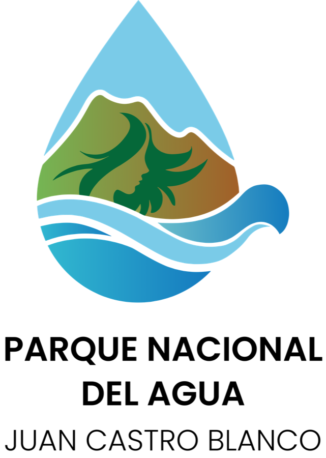
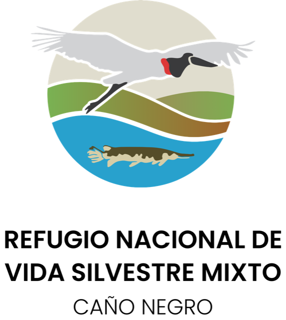
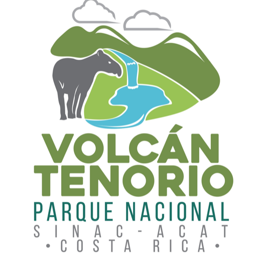

Natural
La identidad nace de montanas, agua, fauna y senderos, reforzando conservacion y respeto por el entorno.
Realidad aumentada para naturaleza y educacion
Una familia de aplicaciones moviles que transforma los senderos de areas silvestres protegidas en experiencias interactivas, educativas y memorables.
El proyecto
NatureAR integra marcadores, contenido movil y realidad aumentada para acercar la biodiversidad costarricense a turistas, estudiantes y personal de parques.
La identidad nace de montanas, agua, fauna y senderos, reforzando conservacion y respeto por el entorno.
La realidad aumentada suma capas digitales al recorrido sin quitar protagonismo al paisaje real.
El lenguaje visual y la experiencia se enfocan en visitantes que necesitan informacion clara, cercana y facil de explorar.
Aplicaciones
El portafolio actual cuenta con dos aplicaciones publicadas en Play Store, Cano Negro en revision y Volcan Tenorio en desarrollo.

Experiencia NatureAR publicada para acompanar el recorrido con contenido interactivo de educacion ambiental.

Aplicacion disponible en Play Store para explorar el parque con una capa digital pensada para visitantes.

Aplicacion enviada a revision para habilitar una experiencia enfocada en humedales, fauna y observacion del entorno.

La cuarta aplicacion del proyecto se encuentra en desarrollo, con identidad visual ya preparada para su evolucion.
Experiencia
La experiencia esta pensada para ocurrir durante el recorrido: el visitante observa, escanea y recibe contenido que explica especies, ecosistemas y puntos clave del parque.
Los marcadores o senales del parque activan contenido relacionado con el entorno inmediato.
La app presenta capas visuales y datos que enriquecen la visita sin interrumpir el camino.
Cada interaccion busca motivar curiosidad, aprendizaje y cuidado por la biodiversidad.
Avance
Contacto
Para consultas del proyecto, colaboraciones o solicitudes relacionadas con privacidad y soporte, puedes contactar al equipo directamente.